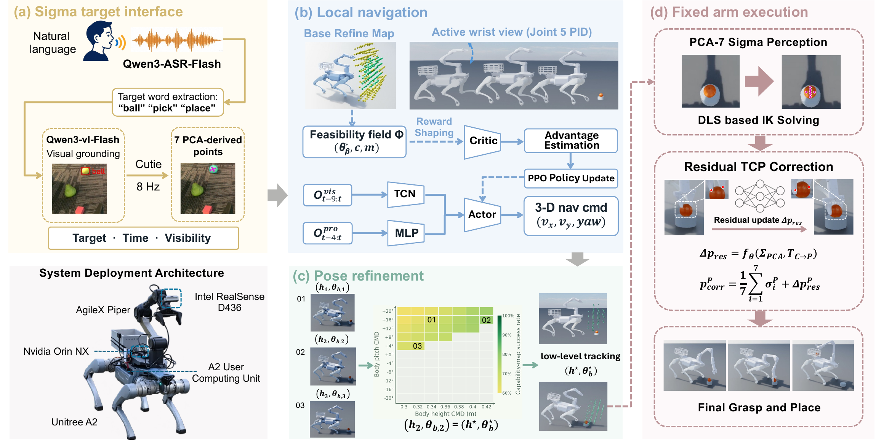

Navigate
The onboard policy approaches the target while active wrist viewing maintains the observations needed for later posture selection and grasping.
ONBOARD QUADRUPED MOBILE MANIPULATION
A2 quadruped · Piper arm · wrist-mounted RGB-D · onboard autonomy
Abstract
MOSAIC is a fully onboard quadruped mobile-manipulation framework that connects local navigation to grasping through an empirical grasp-capability field. Built from wrist-camera observations and simulated grasp trials, the field guides navigation toward configurations favorable for manipulation and scores candidate body-height and pitch adjustments after arrival. A feasibility-conditioned Handoff also checks target validity, foot support, and body stability. The robot then adjusts its posture within bounded ranges and performs vision-guided grasping while the base remains stationary.
Method
The same field shapes navigation rewards and scores feasible body-height and pitch candidates near the navigation endpoint.

The onboard policy approaches the target while active wrist viewing maintains the observations needed for later posture selection and grasping.
Target validity, foot support, body stability, and a feasible capability-field candidate determine whether navigation can hand off to bounded height and pitch adjustment.
After posture adjustment, the stationary quadruped performs a vision-guided arm grasp using the target geometry and camera extrinsics.
Experiments
Real-robot evaluation
The four evaluated conditions cover different target heights, stairs, outdoor terrain, and a slope. The full-task success rate counts a trial as successful only when the target is placed in the robot’s rear-mounted basket.